Qualitative variables: such as
Given features and tell if the response falls in to the qualitative variables, sometimes by calculating the probabilities.
We take two variables case as an exmple, linear regression may result in any kind of values, including negative values, which is not good for the classification probability problem. So we use logistic values.
We need a relation that is easy for our regression which guarantees that the probabilities doesn’t go over 1 or below 0. It indicates that we need
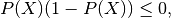
or
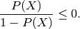
We notice that the first expression is also bounded within 1. It’s more complicated than the second version since the second version is monotonic but the first one is not. So we will try to use the second approach,
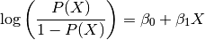
Mathematically speaking, logistic regression is
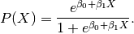
Fermi-Dirac Distribution
This is the Fermi-Dirac distribution in statistical mechanics.
For a bunch of independent variables, we simply multiple all the probabilities and 1-probabilities together to get a joint likelihood.
We simply add more basis to the variable space
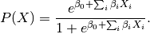
Note that the correlations between variables can alter the signs and make the signs of coefficients very different from single variable case.
In reality, we might not be able to really monitor some experiment through out too many years. One of the techniques that allows us to learn something is to use the case-control sampling. We choose some cases and controls and work out the statistics.
The regression parameters for logistic regress is calculated
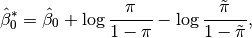
where  is the corrected interception in the model, is the intercept that is obtained by fitting the data, 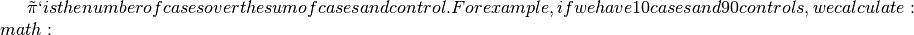tilde pi=10/(10+90)=0.1`. The value of
is the corrected interception in the model, is the intercept that is obtained by fitting the data, 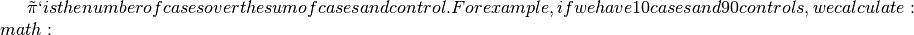tilde pi=10/(10+90)=0.1`. The value of  might be obtained by some other study that shows the actual prevalence among the population.
might be obtained by some other study that shows the actual prevalence among the population.
We usually need more controls to really fit the model, for example we probably need five times more controls than cases.
For Rare Situation
Case-control works well for situation such as diseases, spam emails, etc. It doesn’t work for the situation where the prior probilities for two classes are almost the same.
To fit models with more than two classes, softmax probability has been developed.
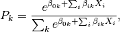
where  indicates which class we are calculating.
indicates which class we are calculating.
This is basically a Boltzmann distribution, and the summation is the partition function.
Everyboday knows it.
But here we are going to rewrite it.
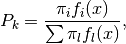
where 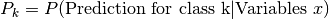, is the probability for class k, 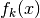 is the probability density for class k.
The density can be chosen to be the Gaussian distribution,
Gaussian Distribution
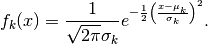
In principle we can plug in the distribution to calculate the probabilities. However, we are mostly interested in the largest probabilities, which is related to a quantity called discriminant function. Probabilities can be reconstructed using it.
It can also be done for multivariable statistics.
© 2018, Lei Ma| GitHub| Statistical Mechanics Notebook | Index | Page Source| changelog| Created with Sphinx